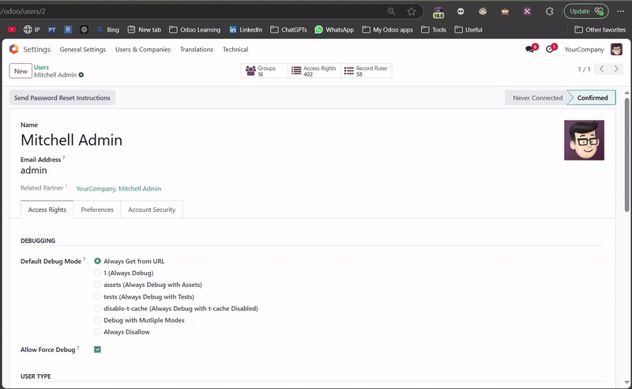
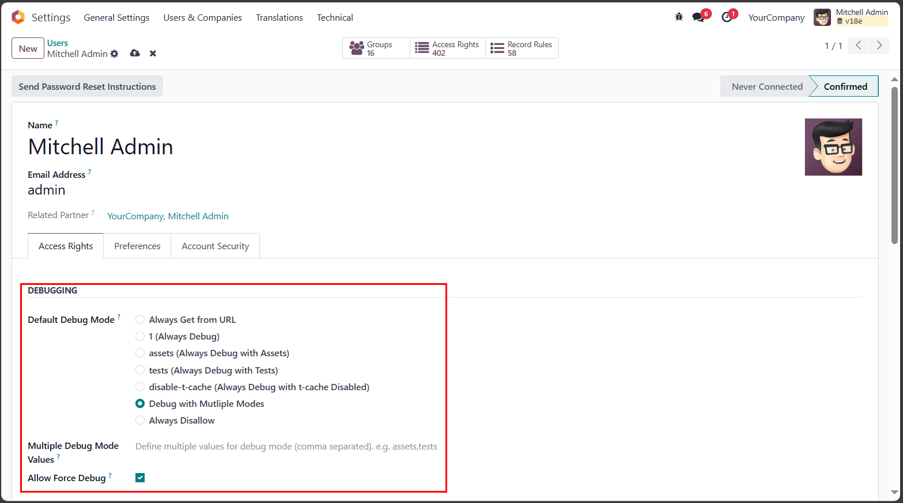

This module provides extended capabilities for debugging management in Odoo. By introducing two new fields in
the Users, it enables administrators to assign specific debug preferences and empower users
with the ability to override debugging via URL parameters.
The field offers seven tailored debug options, providing granular control over user behavior. With the
addition of, users can now force specific debug modes through the URL parameter, giving unparalleled
flexibility during development or troubleshooting.
Default Debug Mode and Allow Force Debug on the Users.force_debug_mode parameter.debug=1) for the user,
making all debugging tools available at all times.
